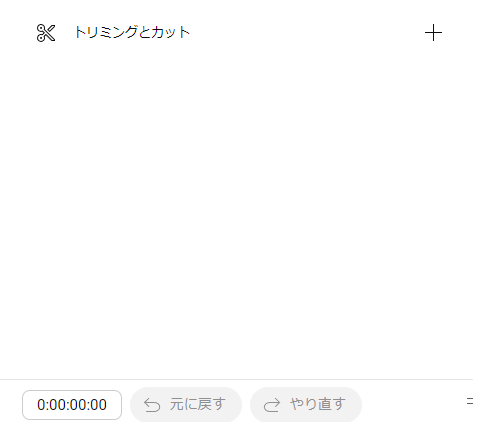
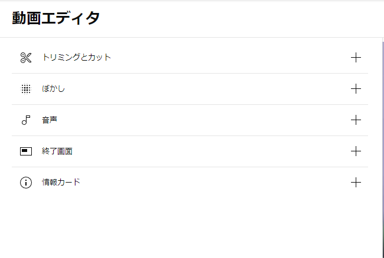

| 作成日 | 2024/10/14 |
| 最終更新日 | 2025/06/06 |
タイトル通りです。
YouTubeで配信をした際、ちょっと配信に載せたくないものが入っちゃうことってありますよね。こういうときに配信終了後に慌ててトリミングしても画像の様に「新規として保存」しか出なくて困ります。
こういうときはおとなしく一度非公開にしておきましょう。
時間が経つと保存が表示されるようになります。一日も待てば十分なはずです。
カットしたい部分をカットして保存できたら再度公開です。
ついでの情報として、エディタの機能もしばらくすると充実します
| 直後 | しばらく後 |
|---|---|
|  |  |